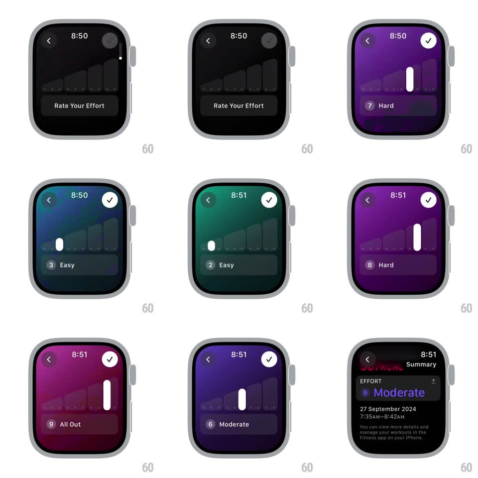

Media
Frame-by-frame

Rebuild this interaction 1:1: Apple Watch's "Rate Your Effort" slider in the Fitness workout summary - dragging a white handle up a vertical track floods the whole screen with a color that shifts through a green-to-magenta intensity ramp while a numbered label pill ("1 Easy" to "10 All Out") updates live at the bottom.

Rebuild this interaction 1:1: Apple Watch's "Rate Your Effort" slider in the Fitness workout summary - dragging a white handle up a vertical track floods the whole screen with a color that shifts through a green-to-magenta intensity ramp while a numbered label pill ("1 Easy" to "10 All Out") updates live at the bottom.
## Integration
Integration: stack-agnostic spec - springs given as stiffness/damping, timed motions as duration + curve; map every value to your framework and animation library of choice.
## Scene
Apple Watch workout summary ("EFFORT / Add Effort"). Tapping Add Effort opens the rating screen: a faint ascending bar-graph silhouette behind a vertical slider on the right, a white circular handle, a bottom pill showing "N Label", and a check button top-right.
## Motion spec
Pattern: full-bleed color-coupled vertical slider.
- As the handle moves (drag or crown), the entire background tweens through a fixed ramp: 1 = deep green ("Easy"), 5 = blue ("Moderate"), 6 = purple, 10 = magenta/red ("All Out") - continuous interpolation, not stepped swatches.
- The handle tracks the drag 1:1 and snaps to the nearest of 10 detents on release (spring ~420/28, ~200ms).
- The bottom pill crossfades its number and label per detent (150ms); pill background is a darker translucent shade of the current color.
- Confirm: the check shrinks briefly (scale 0.9, 100ms) and the view slides back to the summary, where the chosen effort ("6 Moderate", tinted purple) appears in place of "Add Effort" (300ms push).
## Calibration
- The background color IS the feedback - there is no filled-track visualization.
- Color, number, and label change together at every detent; never let them drift out of sync.
## Reduced motion
Handle steps between detents without snap spring; background color crossfades (150ms) instead of continuous interpolation.
## Don't miss
- The faint ascending bar graph behind the slider stays constant - it frames the scale.
- The summary row inherits the chosen effort's color on the label text.